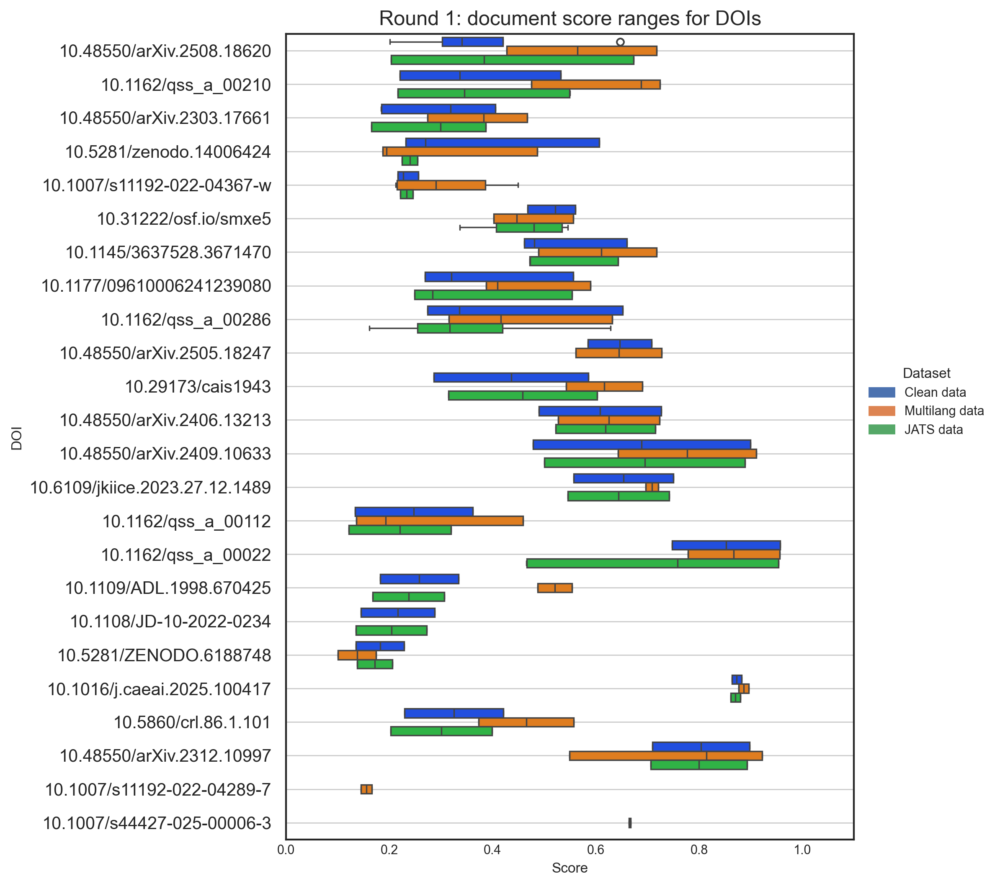

Poppy Riddle’s Dissertation Research
An Analysis of Crossref and OpenAlex as External Knowledge Sources for Retrieval-Augmented Generation
A preprint article version of this can be found here: DOI
Summary
This project page outlines my dissertation research for a PhD in Information Science at Dalhousie University.
In this research, I investigated the presence of errors or noise in bibliographic metadata, specifically the titles and abstracts from two bibliographic databases: Crossref and OpenAlex. Focused on errors and noise that may impact retrieval-augmented generation (RAG) pipelines, 86% of a random sample of journal articles had a error, (such as missing information, or containing multiple languages), or noise, (such as hyperlinks or face markup). An exploration of the effects of two types of errors and noise, specifically multilingual text and face markup, found significant effects on RAG performance. While face markup was not found to affect RAG retrieval or generation metrics, multilingual text was found to beneficially affect the retriever and negatively affect the generator.
Background
In the last few years, AI has been rapidly deployed in the academic context 1 as an aid for discovery and summarization, integrated into tools for systematic review 2, identifying citation contexts3, or to promote publisher-owned works (Scopus AI4, Web of Science Research Assistant5, ProQuest One6, and PrimoVE Research Assistant7 ). These conversational search tools are augmenting or replacing keyword-based search systems. Instead, users can enter questions, request summaries, or ask for similar works. Large language models (LLMs) are the key technology enabling these tools to interpret text semantically and generating well composed responses to user’s information needs. However, LLMs have shortcomings due to the limitations of their training data and their potential to create syntactically correct but factually wrong responses 8. RAG architectures solve this problem by using external knowledge sources to augment the knowledge from the LLM. Bibliographic metadata has potential to serve as a source of external knowledge for these systems.
Problem statement
Prior research has found that typos9, irrelevant information1011, formatting characters from scanned PDFs12, or invisible formatting characters13, as forms of noise negatively impact language models whether they are used for embedding or generation. However, prior studies from the IR and NLP communities have not examined errors and noise found in metadata. Abstract and title elements have been investigated for accuracy14, availability15, and their agreement with language values16, yet prior studies from the LIS community have not looked at noise such as characters, encodings, or irrelevant text that may occur in metadata. Understanding the breadth and occurrence of both errors and noise in titles and abstracts has implications for text cleaning processes or choice of pipeline components.
There exists a gap in the literature linking IR research on RAG with LIS research on metadata quality as it pertained to RAG use of metadata as external knowledge. LIS research has yet to integrate IR definitions of noise within a metadata quality assessment of bibliographic metadata or compare its occurrence between two database sources. IR research has yet to examine the effects of errors and noise observed in bibliographic metadata on a naïve RAG architecture.
Purpose & Research Questions
Assuming the metadata elements of the title and abstract can be used as the external knowledge source for RAG, the purpose of this research was to identify errors and noise in title and abstract content that may affect RAG performance, compare metadata sources for error and noise, and to observe the effect on RAG. A study in three parts was used to investigate the following using modified IS&R dimensions for assigning independent, dependent and control variables.
To answer the problems and challenges introduced above, three research questions align with each part of the study.
- What errors or noise may be observed in the title and abstract from a random sample of Crossref metadata?
- How do Crossref and OpenAlex compare for errors and noise in the same random sample?
- What is the effect of observed errors and noise in metadata on retriever performance and generated responses?

Methodology
Methodologically, each RQ was answered in three parts with the first two parts focused on quantitatively measuring metadata quality and the third part quantitatively measuring effect. Part 1 utilized a random sample from Crossref to observe how the title and abstract contents may contain errors or noise from the perspective of using them in a RAG application as a document source. Part 2 compared the same set of metadata from OpenAlex to observe any differences. Part 3 used errors and noise observed in Parts 1 and 2 to create perturbed datasets which were run through a RAG instrument to measure the effect on the retriever and the generator. All three parts contributed to an information science approach that expanded metadata quality to include the perspective from NLP with types of noise, documented differences for non-matching works between two databases, and explored how errors and noise affected a RAG instrument.

Main results
RQ1
In RQ1, it was unknown what types of problems may exist within the text of titles and abstracts sampled from Crossref. For titles, journal article titles were correct 66.5% in the subset compared with 78% correct with proceedings articles and 90% correct with book chapters. For abstracts, proceedings articles were most correct (78%) followed by book chapters (72%) and journal articles (16%). Missing information and information loss are the two biggest challenges as shown in past research17 and in these results. Processes for addressing missing information and information loss, particularly for language values, where 80.5% of journal articles, 70% of book chapters, and 72% of proceedings articles did not have them. This was followed by the inclusion of multiple languages in titles and abstracts (as inconsistent value representation) and the inclusion of face markup such as MathML and tex-math (as datatype noise) as the most important problems that may directly affect RAG. Other characteristics were also observed such as HTML encodings, hyperlinks to repositories, figure and table captions, and copyright statements. When examined from a perspective of metadata quality that includes noise, Crossref metadata, particularly journal articles, has many errors and noise that may require preprocessing prior to use in RAG.
In the table below are errors and noise categories applied to problems found in the title subset analysis across journal articles, book chapters, and conference proceedings.
| Category | Count | Percentage of subset |
|---|---|---|
| No error or noise | 174 | 58.0% |
| Incorrect element | 47 | 15.7% |
| Information loss | 27 | 9.0% |
| Datatype noise | 17 | 5.7% |
| Inconsistent value representation | 10 | 3.3% |
| Missing information | 9 | 3.0% |
| Semantic noise | 8 | 2.7% |
| Incorrect value | 8 | 2.7% |
| Total | 300 | 100.0% |
In the table below are errors and noise categories applied to problems found in the abstract subset analysis across journal articles, book chapters, and conference proceedings.
| Categories | Counts | Percentage of subset |
|---|---|---|
| No error or noise | 112 | 37.3% |
| Incorrect value | 86 | 28.7% |
| Datatype noise | 29 | 9.7% |
| Semantic noise | 21 | 7.0% |
| Inconsistent value representation | 20 | 6.7% |
| Information loss | 20 | 6.7% |
| Missing information | 9 | 3.0% |
| Incorrect element | 2 | 0.7% |
| Information gain | 1 | 0.3% |
| Total | 300 | 100.0% |
RQ2
In RQ2, 99% (9,998) of DOIs in Part 1 were found in the OpenAlex database. Non-matching titles (223, 2.2%) and abstracts (688, 6.9%) were examined as subsets. Information gains were observed for language (51% of the shared corpus) and missing titles (0.2%) and abstracts (0.6%), which addressed in part one of the major problems identified in Part 1. For the non-matching items, information value representation affected 26% of those non-matching titles and 2.6% of non-matching abstracts. Mismatches between abstracts (5.7%) and titles (3.1%) was observed was due to introduction of datatype noise, adding to the noise already found in the Crossref titles (13.5%) and abstracts (6.5%). Other than information loss and gain as the two largest categories explaining mismatches between the data from the two databases, datatype noise and inconsistent value representation were selected as the errors and noise to explore in Part 3. Overall, the OpenAlex metadata improves upon the Crossref data and is clean of certain face markup, such as JATS tags, however there are areas of information loss and the introduction of noise that should be addressed if using this metadata as a source.
In the table below, non-matching titles were manually inspected and labels for errors and noise were applied as explanations for the difference between the two databases.
| Error and noise classification | Count | Percentage of non-matching | Percentage of whole set |
|---|---|---|---|
| Information loss | 126 | 56.5% | 1.3% |
| Inconsistent value representation | 58 | 26.0% | 0.6% |
| Information gain | 23 | 10.3% | 0.2% |
| Semantic noise | 6 | 2.7% | 0.1% |
| Datatype noise | 7 | 3.1% | 0.1% |
| Missing information | 2 | 0.9% | 0.0% |
| Incorrect value | 1 | 0.4% | 0.0% |
| Total | 223 | 100.0% | 2.2% |
In the table below, non-matching abstracts were manually inspected and explanatory labels for the difference between the two datasets were applied.
| Error and noise classification | Count | Percentage of non-matching | Percentage of the total dataset |
|---|---|---|---|
| Information loss | 563 | 81.8% | 5.6% |
| Information gain | 63 | 9.2% | 0.6% |
| Datatype noise | 39 | 5.7% | 0.4% |
| Inconsistent value representation | 18 | 2.6% | 0.2% |
| Semantic noise | 4 | 0.6% | 0.0% |
| Incorrect value | 1 | 0.1% | 0.0% |
| Total | 688 | 100% | 6.9% |
RQ3
In RQ3, the purpose was to explore how observed errors and noise affect the outcomes of RAG retrieval and generation. The use of JATs tags (datatype noise) was justified by results from Part 1 (100% for JATS and 13% for other types in the automated check and 5.7% in the subset analysis) and Part 2 (100% for JATS and 6.5% of other types). Multilingual titles and abstracts (inconsistent value representation) were found in the data in Part 1 (6.7%) and in Part 2 (2.7%).
Two significant results were observed. Multilingual text was found to have a beneficial effect with higher document similarity scores (p=0.00006, F-value=9.81, 0.95 CI) when used with multilingual capable models though this did not result in significantly different answer relevance scores. However, the same multilingual text was at a disadvantage as evidenced by significantly lower faithfulness scores (p=0.01, 0.95 CI), where at times, the generator struggled to incorporate the multilingual context.

In the figure below, the clean dataset is on the left, the JATS-tagged text scores are in the middle, and the multilingual text is on the right.

No significant effects were observed due to the JATS noise in the other dataset.
Recommendations
Multiple Abstracts Need to be Available
In Part 1, it was found that 13% of journal article metadata do not match between the REST and XML API responses. This was due to multiple abstracts or multiple titles in the XML response which are not reported in the REST API. I suggest more infrastructure changes are needed by database managers to make multiple abstracts more visible and available through REST APIs, the primary means of harvesting data from both Crossref and OpenAlex. I think much can be done to improve this from Crossref with even the addition of a flag if other versions of the abstract are available in the XML API for harvesting single records. For OpenAlex, adding in an ingest path from the XML API would enrich their metadata and make it more aligned with publisher’s or author’s intent, though this is not needed if Crossref expands the REST API. Additionally, this would benefit bibliometrics and metadata quality research with a more accurate representation of abstracts.
Multiple Language Values
As there are multiple places in the Crossref XML API where language attributes can be, OpenAlex should expand the ingest of all language attribute values from the XML API or Crossref should provide a data dump based on the XML API schema. If multiple versions of an abstract exist, there should be agreement between reported languages at the journal level and the languages in the specific title or abstract attributes. As an example, the language attribute, if maintained at the journal level, should include a tuple of all languages that have been used, such as (‘en’, ‘de’). Alternatively, Crossref could collect this information and make it available in the REST API.
Footnotes
Taylor, J., Dagan, K., Youngberg, M., Kaufman, T., & Radding, J. (2025). A Survey of AI tools in Library Tech: Accelerating into and Unlocking Streamlined Enhanced Convenient Empowering Game-Changers. Journal of Electronic Resources Librarianship, 37(2), 217–229. https://doi.org/10.1080/1941126X.2025.2497738↩︎
Han, B., Susnjak, T., & Mathrani, A. (2024). Automating Systematic Literature Reviews with Retrieval-Augmented Generation: A Comprehensive Overview. Applied Sciences, 14(19), 9103. https://doi.org/10.3390/app14199103↩︎
https://scite.ai/assistant↩︎
https://www.elsevier.com/products/scopus/scopus-ai↩︎
https://clarivate.com/academia-government/scientific-and-academic-research/research-discovery-and-referencing/web-of-science/web-of-science-research-assistant/↩︎
https://about.proquest.com/en/products-services/ProQuest-One-Academic/↩︎
https://ir.clarivate.com/news-events/press-releases/news-details/2024/Clarivate-Launches-Generative-AI-Powered-Primo-Research-Assistant/default.aspx↩︎
Lewis, P., Perez, E., Piktus, A., Petroni, F., Karpukhin, V., Goyal, N., Küttler, H., Lewis, M., Yih, W., Rocktäschel, T., Riedel, S., & Kiela, D. (2020). Retrieval-Augmented Generation for Knowledge-Intensive NLP Tasks. Advances in Neural Information Processing Systems, 33, 9459–9474. https://proceedings.neurips.cc/paper/2020/hash/6b493230205f780e1bc26945df7481e5-Abstract.html↩︎
Cho, S., Jeong, S., Seo, J., Hwang, T., & Park, J. C. (2024). Typos that Broke the RAG’s Back: Genetic Attack on RAG Pipeline by Simulating Documents in the Wild via Low-level Perturbations (arXiv:2404.13948). arXiv. https://doi.org/10.48550/arXiv.2404.13948↩︎
Chen, J., Lin, H., Han, X., & Sun, L. (2024). Benchmarking Large Language Models in Retrieval-Augmented Generation. Proceedings of the AAAI Conference on Artificial Intelligence, 38(16), Article 16. https://doi.org/10.1609/aaai.v38i16.29728↩︎
Shi, F., Chen, X., Misra, K., Scales, N., Dohan, D., Chi, E. H., Schärli, N., & Zhou, D. (2023). Large Language Models Can Be Easily Distracted by Irrelevant Context. Proceedings of the 40th International Conference on Machine Learning, 31210–31227. https://proceedings.mlr.press/v202/shi23a.html↩︎
Zhang, J., Zhang, Q., Wang, B., Ouyang, L., Wen, Z., Li, Y., Chow, K.-H., He, C., & Zhang, W. (2025). OCR Hinders RAG: Evaluating the Cascading Impact of OCR on Retrieval-Augmented Generation. 17443–17453. https://openaccess.thecvf.com/content/ICCV2025/html/Zhang_OCR_Hinders_RAG_Evaluating_the_Cascading_Impact_of_OCR_on_ICCV_2025_paper.html↩︎
Stambolic, V., Dhar, A., & Cavigelli, L. (2025). RAG-Pull: Imperceptible Attacks on RAG Systems for Code Generation (arXiv:2510.11195). arXiv. https://doi.org/10.48550/arXiv.2510.11195↩︎
Delgado-Quirós, L., & Ortega, J. L. (2024). Completeness degree of publication metadata in eight free-access scholarly databases. Quantitative Science Studies, 5(1), 31–49. https://doi.org/10.1162/qss_a_00286↩︎
Eck, N. J. van, & Waltman, L. (2022). Crossref as a source of open bibliographic metadata. OSF. https://doi.org/10.31222/osf.io/smxe5↩︎
Céspedes, L., Kozlowski, D., Pradier, C., Sainte-Marie, M. H., Shokida, N. S., Benz, P., Poitras, C., Ninkov, A. B., Ebrahimy, S., Ayeni, P., Filali, S., Li, B., & Larivière, V. (2024). Evaluating the Linguistic Coverage of OpenAlex: An Assessment of Metadata Accuracy and Completeness (arXiv:2409.10633). arXiv. https://doi.org/10.48550/arXiv.2409.10633↩︎
Delgado-Quirós, L., & Ortega, J. L. (2024). Completeness degree of publication metadata in eight free-access scholarly databases. Quantitative Science Studies, 5(1), 31–49. https://doi.org/10.1162/qss_a_00286↩︎